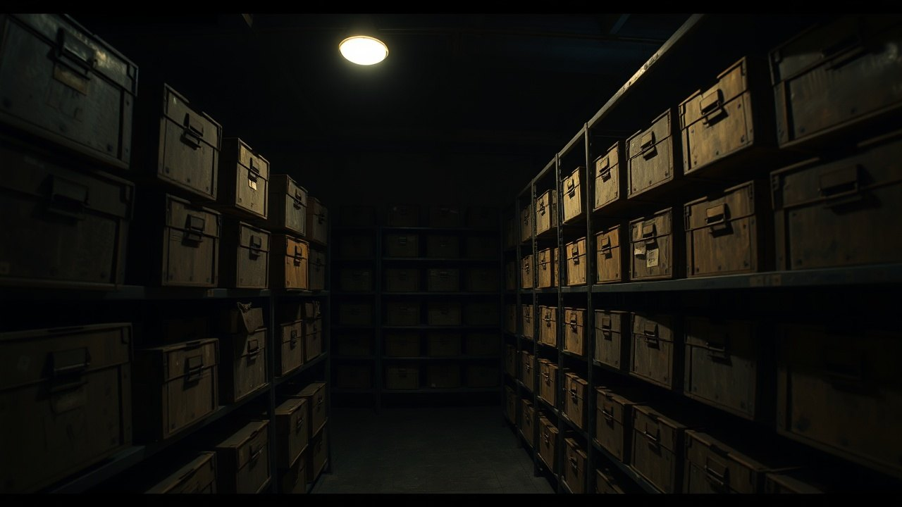

The Smithsonian Institution received eighteen oversized human skulls from a mound complex outside Lake Delavan, Wisconsin, in May 1912. None of them were ever placed on public display. None of them appear in the current online catalogue of the National Museum of Natural History. That is the flip. That is the receipt.
I am Jordan Vale, and I have spent six weeks pulling newspaper microfiche, field notes, and Bureau of American Ethnology transfer records to answer one question. If the standard debunking is correct and every giant skeleton reported in America was a hoax, a scam, or a misidentified bison, where did the physical specimens actually go.

Lake Delavan, May 1912. Eighteen Skulls. One Newspaper Report.
The Delavan Enterprise ran the story on May 4, 1912. Beloit College's Logan Museum of Anthropology, under Dr. George A. West, opened a set of burial mounds on the farm of a man named Peterson on the shore of Lake Delavan in Walworth County, Wisconsin.
The report describes eighteen skeletons. It describes skulls significantly larger than any modern human, jaws that fit over a living man's face, and a double row of teeth in the upper and lower jaws. The report gives the height of the remains as ranging between seven and nine feet.
The same story ran again on May 20, 1912, in the New York Times, dateline Delavan, headline "Skeletons of Prehistoric Giants Found in Wisconsin Mounds." This is not a fringe blog. This is the paper of record. It cited the Beloit team by name and gave the count as eighteen.
1909. Nevada. Same Description. Same Newspaper.
Three years earlier, on October 4, 1909, the New York Times published "Giant Skeletons Found. Discovery in Nevada of Remains of Race of Enormous Size." The article credits a geologist named John T. Reid and locates the find near Lovelock, Nevada.
Reid's specimens were later described in newspapers across the state as measuring between seven and eight feet in length. Reid himself was not a hoaxer. He was a working mining engineer with a documented career in Humboldt County. His field correspondence sits in the Nevada Historical Society archive in Reno.
Reid personally lobbied the Smithsonian for years to authenticate his finds. His letters, catalogued in the Nevada Historical Society Quarterly, complain repeatedly that specimens shipped east were never returned and never publicly acknowledged.
Lovelock Cave. 1911 to 1924. Sixty Individuals.
Guano miners David Pugh and James Hart began stripping bat guano from a cave on the Humboldt Sink in 1911. They pulled human remains, woven duck decoys, sandals, and mummified tissue from the deposit. The University of California at Berkeley sent Llewellyn Loud to formally excavate the site in 1912.
Loud's field notes, held today at the Phoebe A. Hearst Museum of Anthropology, list roughly sixty individual human specimens recovered from Lovelock Cave. Some of the sandals recovered measured over fifteen inches long. Some of the hair recovered was reddish.
The Paiute oral tradition, recorded by Sarah Winnemucca Hopkins in her 1883 book "Life Among the Piutes," describes a hostile people her ancestors called the Si-Te-Cah. Red-haired. Tall. Driven into a cave and burned. She wrote this down twenty-eight years before Pugh and Hart broke ground.
Bison bones do not wear woven fiber sandals. Bison bones do not sit next to duck decoys. And bison bones do not match a Paiute oral history recorded in 1883 that predicted the exact location of the burial by twenty-eight years.
The Hrdlicka Cutoff. 1915 to 1934.
Ales Hrdlicka became curator of physical anthropology at the United States National Museum, now the Smithsonian's National Museum of Natural History, in 1903. By 1915, he was the primary gatekeeper for every set of human remains flowing into the institution from the American West.
Newspaper reports of oversized skeletons drop off sharply after 1915. Not because the ground stopped producing them. Because Hrdlicka's public policy, later stated flatly in his 1934 debunking, was that no such remains existed and any claim to the contrary reflected amateur error.
Hrdlicka's own accession records, however, show shipments continuing to arrive from the field. The Smithsonian's own online collections search returns catalogued material from Lovelock Cave under accession numbers associated with the Loud excavation. What it does not return is the mummified tissue, the oversized crania, or the sandals photographed in the original 1912 field documentation.
Where the Bones Went.
Two of the Lovelock skulls are on public display, but not at the Smithsonian. They sit in a glass case at the Humboldt Museum in Winnemucca, Nevada. They are visibly larger than the standard skulls displayed next to them. The museum will show them to you for the price of admission.
The Lake Delavan skulls have no such display. Beloit's Logan Museum inventory, reviewed in a 2018 Wisconsin State Journal follow-up, does not list them. The Peterson farm site was flooded, developed, and paved over across the twentieth century.
The Smithsonian's public response, most recently through a 2014 statement carried by the Associated Press, is that the institution has never possessed giant skeletons and never destroyed any. That statement is technically consistent with a catalogue that simply does not list what was received.
So the paper trail runs like this. Eighteen skulls out of Wisconsin in 1912. Eight-foot skeletons out of Nevada in 1909. Sixty individuals out of Lovelock Cave between 1911 and 1924. Field notes at Berkeley. Newspaper coverage in the Times of record. Oral history from the Paiute that predates the archaeology by a generation.
And on the other side of the ledger, one curator, one 1934 debunking, and a public catalogue that shows none of it. The reports did not stop in 1915 because the ground went quiet. They stopped because the receiving end went quiet.
Two of those skulls are still visible in Winnemucca. I want to know where the other fifty-eight went. Drop your theory in the comments. If you have a family member who worked a dig in Walworth County or Humboldt County before 1930, I want to hear from you first.
Before you go
7 books the Vatican doesn't want you reading. Free PDF, the texts they cut, with sources. Joined by 140+ Inner Circle members.
No spam. Unsubscribe anytime.
Go deeper
The Hidden Canon, Vol. I, Enoch. Jubilees. Thomas. Mary. Judas. 90 pages, 14 chapters, every receipt cited. The books your Bible quietly removed.
Read the Canon →Books that informed this investigation
As an Amazon Associate, Hidden Epoch earns from qualifying purchases. Cost to you: nothing.
Research safely
The VPN we use to research without being tracked. First 3 months free.
Get NordVPN →